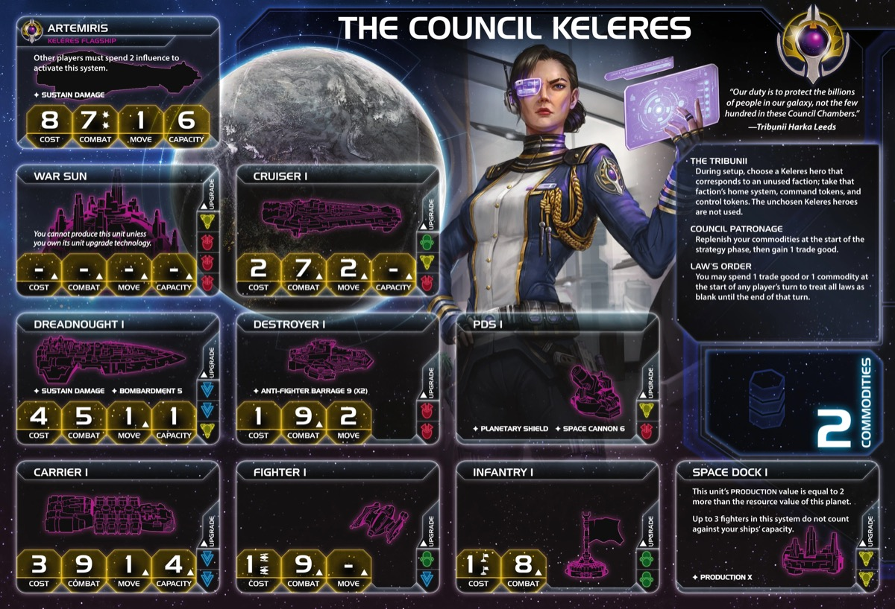

The Council Keleres is TI4’s most adaptable faction, built around choosing one of three sub-factions (Argent Flight, Mentak Coalition, or Xxcha Kingdom) and inheriting their home system. This faction excels at political manipulation, economic consistency, Mecatol Rex control, and insane production capabilities. Keleres isn’t about raw power—it’s about flexibility, agenda control, and leveraging political influence to shape the game.
Watch opponents realize you’ve controlled every agenda that matters, your economy stays consistent, and you’re producing on Mecatol Rex without a space dock. When Keleres shows up, the galaxy bends to your will.
Playing Council Keleres is like commanding a top-tier political powerhouse with military backup. Your Tribunii ability lets you choose between three different home systems (Argent/Mentak/Xxcha), giving you flexibility based on map position and strategy. Your Council Patronage gives you free trade goods every round. Your Law’s Order lets you ignore laws when needed.
The key strength of Keleres is adaptability and consistency. Choose your home system wisely, leverage Council Patronage for steady economy, and use Executive Order tech to control agendas. You win through political dominance and strategic positioning. Keleres excels at winning from ahead - once you get your faction techs (Executive Order and Agency Supply Network), you become incredibly difficult to stop.
Opponents will struggle to predict your moves. That moment when they realize how many agendas they’ll have to vote for and start crying? Just another day for Keleres.
Home System Options (choose one during setup):
Argent Flight:
Mentak Coalition:
Xxcha Kingdom:
Commodities: 2
Notes: Your home system choice fundamentally changes your economy and playstyle. Mentak is the clear #1 choice - one-planet home systems are far superior (easier to defend), you get 4 resources (best for production), and Mentak hero (Harka Leeds) is by far the best of the three, giving you 3 component action cards that combo with your commander for extra actions. Always pick Mentak if available.
Xxcha and Argent are a bit of a tossup. Multi-planet home systems are rough - if you lose space combat, you’re defending multiple planets which is nearly impossible (Xxcha has 2 planets, Argent has 3). Argent has better total optimal value (2.5 + 2.5 = 5 optimal vs Xxcha’s 0.5 + 3.5 = 4 optimal) and a better hero (Overwing Zeta gives you instant flagship + 2 cruisers/destroyers in combat), but both offer similar influence.
Notes: Rough starting fleet. While you have 2 carriers for capacity and a cruiser for combat, you only have 2 infantry, which greatly reduces your ability to expand early. You’ll struggle to take multiple planets R1 compared to factions with more ground forces. Plan your expansion carefully.
The Tribunii: During setup, choose an unplayed faction from among the Mentak, the Xxcha, and the Argent Flight; take that faction’s home system, command tokens, and control markers. Additionally, take the Keleres hero that corresponds to that faction.
Your defining ability. Choose your home system and starting command tokens from one of three factions. This also determines which hero you get (each has different abilities). Choose wisely based on map position, slice resources/influence, and strategy.
Council Patronage: Replenish your commodities at the start of the strategy phase, then gain 1 trade good.
Incredible economic consistency. Every strategy phase, you refresh your 2 commodities AND gain 1 TG for free. This gives you 3 TG worth of value every round (2 commodities + 1 TG). Important: You need a trade partner to wash your commodities into trade goods - don’t be reliant on your agent to do this. Make friends and establish trade agreements so you can actually use your commodity value.
Law’s Order: You may spend 1 Trade Good or Commodity to treat all laws as blank until the end of the turn.
Ultimate law flexibility. Spend 1 TG/commodity to ignore ALL laws for the entire turn. Use this strategically when laws would hurt you.
Starting Technologies:
Choose 2 non-faction technologies owned by other players
Optimal: Sarween Tools + Gravity Drive
Notes: You choose 2 non-faction techs owned by other players - this means you’re limited to what your opponents have, not any 2 techs in the game. Sarween Tools gets you started on the yellow tech path, and Gravity Drive gives you the mobility to reach Mecatol Rex quickly. If these aren’t available from other players, take any blue + yellow combination that is available. Your I.I.H.Q. Modernization breakthrough makes green and yellow count as each other for prerequisites, allowing green techs as well. See Section V (Technology) for detailed discussion of starting tech options and tech paths.
Faction Technologies:
Executive Order
 :
ACTION: Draw and reveal 1 agenda card from the top of the agenda
deck. Players may cast votes for or against this agenda as if it were
the outcome of an agenda. You are the speaker for this agenda.
:
ACTION: Draw and reveal 1 agenda card from the top of the agenda
deck. Players may cast votes for or against this agenda as if it were
the outcome of an agenda. You are the speaker for this agenda.
Your signature political control technology. Draw and vote on agendas whenever you want - devastating for controlling the game. Force opponents to exhaust influence planets on agendas. Since you’re always speaker when you use it, you can decide not to vote and use it purely as an economic weapon, exhausting opponents’ influence planets while keeping yours fresh. High priority tech to get by Round 2.
Agency Supply Network

 :
Once per action, when you resolve a unit’s PRODUCTION ability, you
may resolve another of your unit’s PRODUCTION ability in any
system.
:
Once per action, when you resolve a unit’s PRODUCTION ability, you
may resolve another of your unit’s PRODUCTION ability in any
system.
Game-changing production technology. Produce in two different systems in a single action. With Sarween Tools, you get the -1 discount in BOTH systems, effectively doubling your Sarween value. With 3 space docks + Mecatol Rex (PRODUCTION 3 from Custodia Vigilia), you can activate all 4 systems and produce up to 8 times total (4 activations × 2 productions per activation). This lets you flood the board with units and reinforce multiple fronts simultaneously. Essential tech to get by Round 3.
Agent - Xander Alexin Victori III: At any time: You may exhaust this card to allow any player to spend commodities as if they were trade goods.
Useful diplomatic tool. Convert anyone’s commodities to trade goods instantly. Great for helping allies or yourself in critical moments. Good for making deals.
Commander - Suffi An: Unlock: Spend 1 trade good after you play an action card that has a component action.
After you perform a component action: You may perform an additional action.
Fairly easy unlock condition. Once unlocked, after you perform a component action (from action cards or technologies with ACTION: abilities), you can take ANOTHER action immediately. This allows for some crazy action card plays and lets you chain actions for big turns.
Hero (depends on Tribunii choice):
Argent Flight - Overwing Zeta: Unlock: Have 3 scored objectives.
Artemiris Ascendant - At the start of a round of space combat in a system that contains a planet you control: Place your flagship and up to a total of 2 cruisers and/or destroyers from your reinforcements in the active system. Then, purge this card.
Massive reinforcement. Instant flagship + 2 cruisers/destroyers in combat. Use when defending key systems or surprising opponents in critical battles.
Mentak Coalition - Harka Leeds: Unlock: Have 3 scored objectives.
Erwan’s Covenant - ACTION: Reveal cards from the action deck until you reveal 3 action cards that have component actions. Draw those cards and shuffle the rest back into the action card deck. Then, purge this card.
Action card engine. Get 3 component action cards instantly. With Commander (Suffi An), these component actions let you take additional actions. Game-changing value.
Xxcha Kingdom - Odlynn Myrr: Unlock: Have 3 scored objectives.
Operation Archon - After an agenda is revealed: You may cast up to 6 additional votes on this agenda. Predict aloud an outcome of this agenda. For each player that votes for another outcome, gain 1 trade good and 1 command token. Then, purge this card.
Political pressure. Cast 6 extra votes on any agenda and predict the outcome. If others vote differently, you gain TG and command tokens. Problem: Players can simply abstain to deny you the rewards, making this the weakest of the three heroes.
After an agenda is revealed: You cannot vote on this agenda. Predict aloud an outcome of this agenda. If your prediction is correct, draw 1 action card and gain 2 trade goods. Then, return this card to the Keleres player.
Not worth much. The holder can’t vote but gets to predict outcomes for rewards. Best way to sell it: 1 TG if used right away, or ask if someone wants to use it for free (you get the 2 TGs if they predict correctly, they get the free action card).
Alliance Ability: While you are neighbors with the Keleres player and their commander is unlocked: After you perform a component action, you may perform an additional action.
Useful alliance for action-heavy factions. Component actions let the ally chain additional actions. Good for making a friend and exchanging alliance promissory notes - your alliance doesn’t have to be superb for them, but it helps you wash your commodities into trade goods through the trade relationship.
Cost: 2 | Combat: 6 | Sustain Damage
Other players must spend 1 influence to commit ground forces to the planet that contains this unit.
Defensive mech. Opponents must spend 1 influence to invade planets with your mechs. Important: Each mech requires a separate influence payment. If you have multiple mechs on a planet, a 4-0 influence planet can only pay for one mech, not all of them. Not the most useful ability, but it can catch people off guard and make invasions awkward. Great for defending key planets like Mecatol Rex.
Cost: 8 | Combat: 7 (x2) | Move: 1 | Capacity: 3 | Sustain Damage
Other players must spend 2 influence to activate the system that contains this ship.
More annoying than great. Opponents must spend 2 influence to activate systems with your flagship, which can catch people off guard, but the stats are mediocre (7 combat x2, move 1). The influence tax is irritating but not game-breaking.
When you gain this card, gain the Custodia Vigilia planet card and its legendary planet ability card. You are neighbours with all players that have units or control planets in or adjacent to the Mecatol Rex system.
Custodia Vigilia: 2 resources / 2 influence (Legendary Planet)
Legendary Ability: While you control Mecatol Rex, it gains SPACE CANNON 5 and PRODUCTION 3. Gain 2 command tokens when another player scores VP using Imperial.
Y↔︎G Synergy: Yellow and green technologies count as each other for prerequisites.
Really solid breakthrough that gives a value planet and allows for big lategame Mecatol Rex moves. Custodia Vigilia provides different value depending on the game state: when you control MR, it gives SPACE CANNON 5 and PRODUCTION 3 for defense and production; when you don’t control MR, you still gain 2 command tokens whenever another player scores with Imperial. Combining the PRODUCTION 3 with your Agency Supply Network faction tech makes you very hard to push off Mecatol Rex - you can produce on MR and another system in a single action. Becoming neighbors with everyone near MR opens up diplomatic options.
Y↔︎G synergy: Opens yellow and green tech paths flexibly.
Keleres wants flexibility and Mecatol Rex access. Your priorities:
Speaker Order:
Slice Priorities:
Slice Features to Avoid:
Summary: Keleres needs Mecatol Rex access above all else. Choose your home system (Argent/Mentak/Xxcha) to match your slice’s resource/influence distribution. Your I.I.H.Q. Modernization breakthrough makes MR control even more valuable—Custodia Vigilia buffs MR.
Your Round 1 (R1) is rough due to limited ground forces. The priority order is:
Your ideal R1 involves expanding to 2 systems with your limited infantry and beginning your tech path.
Your home system choice locks you into a specific economic profile. Choose poorly and you’ll struggle all game. Mentak (4 resources) is best for resource-heavy slices, Xxcha (4 influence) for influence-heavy slices, Argent (2.5/2.5 optimal) for balanced slices. Choose wisely during setup—you can’t change it.
Your entire strategy revolves around controlling Mecatol Rex. I.I.H.Q. Modernization buffs MR with SPACE CANNON 5 and PRODUCTION 3, making it incredibly valuable. If you can’t reach MR or lose control of it, you lose a major advantage. Always prioritize MR access and defense.
You choose 2 non-faction techs owned by other players - this means you’re limited to what your opponents have, not any 2 techs in the game. Your I.I.H.Q. Modernization breakthrough makes green and yellow count as each other for prerequisites, allowing green techs as well.
Core Tech Goals:
Executive Order
 - Draw and immediately vote on an agenda. Political control.
- Draw and immediately vote on an agenda. Political control.
Agency Supply Network

 - Produce in two systems per action
- Produce in two systems per action
Recommended Starting Techs:
Get Sarween Tools and a
blue tech (preferably Gravity
Drive
 ,
but Dark Energy Tap,
Antimass Deflectors, or
Sling Relay
,
but Dark Energy Tap,
Antimass Deflectors, or
Sling Relay
 also work). Sarween gets you started on the yellow tech path toward
Executive Order and Agency
Supply Network. Sarween has great synergy with Agency Supply Network - when you produce in
two systems per action, you get the -1 cost reduction in both systems,
effectively getting double the discount. Gravity
Drive gives you mobility to reach Mecatol Rex quickly. If Sarween
isn’t available, Scanlink Drone
Network is a fine replacement. Predictive Intelligence
also work). Sarween gets you started on the yellow tech path toward
Executive Order and Agency
Supply Network. Sarween has great synergy with Agency Supply Network - when you produce in
two systems per action, you get the -1 cost reduction in both systems,
effectively getting double the discount. Gravity
Drive gives you mobility to reach Mecatol Rex quickly. If Sarween
isn’t available, Scanlink Drone
Network is a fine replacement. Predictive Intelligence
 is also probably worth it as a yellow tech option.
is also probably worth it as a yellow tech option.
Green alternatives: Neural
Motivator and Bio-Stims
 work with the Y↔︎G breakthrough - Neural lets you use your Commander
(Suffi An) more with component action cards, Bio-Stims synergizes well with your faction tech Executive Order and is definitely a fun option. Bio-Stims + Executive Order
allows for a potential of 10 extra agendas - who wouldn’t love that?
work with the Y↔︎G breakthrough - Neural lets you use your Commander
(Suffi An) more with component action cards, Bio-Stims synergizes well with your faction tech Executive Order and is definitely a fun option. Bio-Stims + Executive Order
allows for a potential of 10 extra agendas - who wouldn’t love that?
Last resort if there’s truly no way to get to your
blue/yellow path: AI Development
Algorithm, Self-Assembly
Routines
 ,
or Magen Defense Grid
,
or Magen Defense Grid
 can work, though these delay your core tech goals significantly.
can work, though these delay your core tech goals significantly.
Primary Path:
Assuming you found a way to start with yellow and blue (doesn’t matter which):
Round 1:
Round 2:
Round 3:
Round 4-5:
Note: I.I.H.Q. Modernization breakthrough swaps yellow/green prerequisites, so you can get green techs with yellow prereqs and vice versa.
You have a straightforward and strong tech path that allows for multiple objectives, strong fighting, and good mobility. The Y↔︎G breakthrough flexibility means yellow and green techs count as each other for prerequisites, opening up additional tech options if needed.
Strategy Token Priority: Warfare (critical for producing infantry), Technology (expansion flex), Diplomacy (afford all goodies R1).
Love:
Good:
Situational:
Your ideal fleet composition: Carrier + Dreadnought + Fighter screen. Never cruisers in fleet.
You’ll have tons of infantry from production (thanks to Agency Supply Network and multiple space docks), so focus your fleet on carriers for capacity and dreadnoughts for combat power. Fighters absorb hits.
Deploy mechs on key locations (Omiopiares makes planets expensive to invade - opponents must spend 1 influence per mech).
Flagship is fine but build it more if objectives need it. It’s not a core priority.
Round 1 is critical - solve your expansion problem to get economy started. You have one of the highest ceilings but lowest floors on start. With only 2 infantry, you need to execute R1 carefully. Get Construction primary for a bonus space dock to expand, or use Warfare secondary to produce more ground forces. You can also get I.I.H.Q. Modernization breakthrough R1 using your starting commodities + Council Patronage TG (3 total) with your agent. This gives you Custodia Vigilia, which provides 2 command tokens when opponents score Imperial and makes you neighbors with everyone near Mecatol Rex, opening up diplomatic options. Solving your R1 expansion problem gives you the ability to execute your strategy further down the line.
Take Mecatol Rex R3 or later once you have your techs and armada set up. With Custodia Vigilia’s PRODUCTION 3 and SPACE CANNON 5, MR becomes a fortress. The PRODUCTION 3 lets you produce on MR without a space dock, and combined with Agency Supply Network, you can reinforce MR and another system simultaneously.
Use Executive Order aggressively to screw with people’s economy (force them to exhaust influence planets on agendas) or get valuable laws in play. Since you’re always speaker when you use it, you can decide not to vote and use it purely as an economic weapon.
Outproduce people with Agency Supply Network. Once you have ASN and multiple space docks, you can flood the board with units. With 3 space docks + Mecatol Rex (PRODUCTION 3), you can produce up to 8 times total (4 activations × 2 productions per activation). This production advantage lets you maintain multiple fronts and replace losses easily.
Use your mobility to hit objectives. With Gravity Drive and your strong tech path, you have the mobility to grab objectives efficiently. Carrier II and Dreadnought II give you combat power and capacity to take and hold key systems.
Fracture is available due to unit upgrades. Your fleet of upgraded carriers and dreadnoughts can split and apply pressure across multiple fronts, making you hard to contain.
Strengths: Keleres excels at agenda and political objectives with flexible voting power and Council Patronage economy. Tech objectives are achievable with strong tech paths, and Mecatol Rex scoring is natural with Custodia Vigilia production ability.
Weaknesses: Structure objectives are very difficult without natural production bonuses. Tech diversity objectives can be challenging depending on starting tech availability, and planet control objectives require more work than combat-focused factions.
| Stage I Objective | Status |
|---|---|
| Spendies | |
| Erect a Monument (Spend 8 resources) | 🟢 |
| Sway the Council (Spend 8 influence) | 🟡 |
| Negotiate Trade Routes (Spend 5 trade goods) | 🟢 |
| Lead from the Front (Spend 3 tokens from tactic/strategy pools) | 🟢 |
| Amass Wealth (Spend 3 influence, 3 resources, 3 trade goods) | 🟢 |
| Control | |
| Expand Borders (Control 6 planets in non-home systems) | 🟢 |
| Corner the Market (Control 4 planets with same trait) | 🔴 |
| Found Research Outposts (Control 3 planets with tech specialties) | 🔴 |
| Discover Lost Outposts (Control 2 planets with attachments) | 🔴 |
| Push Boundaries (Control more planets than each neighbor) | 🟢 |
| Ships in Systems | |
| Intimidate the Council (Ships in 2 systems adjacent to MR) | 🟢 |
| Explore Deep Space (Units in 3 systems without planets) | 🟢 |
| Make History (Units in 2 systems with legendary/MR/anomalies) | 🟢 |
| Populate the Outer Rim (Units in 3 edge systems) | 🟢 |
| Raise a Fleet (5+ non-fighter ships in 1 system) | 🟢 |
| Engineer a Marvel (Have flagship or war sun on board) | 🟢 |
| Tech | |
| Diversify Research (Own 2 techs in each of 2 colors) | 🟢 |
| Develop Weaponry (Own 2 unit upgrade technologies) | 🟢 |
| Structure | |
| Build Defenses (Have 4+ structures) | 🟡 |
| Improve Infrastructure (Structures on 3 planets outside HS) | 🟡 |
Legend: 🟢 Likely | 🟡 Possible | 🔴 Difficult
| Secret Objective | Status |
|---|---|
| Combat | |
| Unveil Flagship (Win space combat with flagship) | 🟢 |
| Destroy their Greatest Ship (Destroy war sun/flagship) | 🟢 |
| Spark a Rebellion (Win combat vs most VP player) | 🟢 |
| Betray a Friend (Win combat vs player whose PN you have) | 🟢 |
| Brave the Void (Win combat in anomaly) | 🟢 |
| Darken the Skies (Win combat in another player’s HS) | 🔴 |
| Demonstrate your Power (3+ non-fighter ships after space combat) | 🟢 |
| Turn their Fleets to Dust (SPACE CANNON destroy last ship) | 🔴 |
| Make an Example (BOMBARDMENT destroy last ground forces) | 🟡 |
| Fight With Precision (AFB destroy last fighter) | 🔴 |
| Ships in Systems | |
| Threaten Enemies (Ships adjacent to another player’s HS) | 🟢 |
| Cut Supply Lines (Ships in system with another’s space dock) | 🟢 |
| Defy Space and Time (Units in wormhole nexus) | 🟡 |
| Become the Gatekeeper (Ships in alpha and beta wormhole systems) | 🟡 |
| Learn Secrets of the Cosmos (Ships in 3 systems adjacent to anomalies) | 🟢 |
| Control the Region (Ships in 6 systems) | 🟢 |
| Occupy the Seat of the Empire (Control MR with 3+ ships) | 🟢 |
| Control | |
| Monopolize Production (Control 4 industrial planets) | 🔴 |
| Mine Rare Minerals (Control 4 hazardous planets) | 🔴 |
| Forge an Alliance (Control 4 cultural planets) | 🔴 |
| Establish Hegemony (Control planets with 12+ influence) | 🟢 |
| Hoard Raw Materials (Control planets with 12+ resources) | 🟢 |
| Seize an Icon (Control legendary planet) | 🟢 |
| Stake Your Claim (Control planet in contested system) | 🟡 |
| Become a Martyr (Lose control of planet in HS) | 🔴 |
| Tech | |
| Adapt New Strategies (Own 2 faction technologies) | 🟢 |
| Master the Laws of Physics (Own 4 tech of same color) | 🟢 |
| Structure/Units | |
| Establish a Perimeter (Have 4 PDS on board) | 🔴 |
| Fuel the War Machine (Have 3 space docks) | 🟢 |
| Gather a Mighty Fleet (Have 5 dreadnoughts) | 🔴 |
| Mechanize the Military (1 mech on each of 4 planets) | 🟢 |
| Occupy the Fringe (9+ ground forces on planet without space dock) | 🔴 |
| Produce en Masse (Units with PRODUCTION 8+ in single system) | 🔴 |
| Other | |
| Dictate Policy (3+ laws in play) | 🟢 |
| Drive the Debate (You/your planet elected by agenda) | 🟢 |
| Destroy Heretical Works (Purge 2 relic fragments) | 🔴 |
| Form a Spy Network (Discard 5 action cards) | 🟢 |
| Foster Cohesion (Be neighbors with all players) | 🟢 |
| Strengthen Bonds (Have another player’s PN) | 🟢 |
| Prove Endurance (Last to pass) | 🟡 |
Legend: 🟢 Likely | 🟡 Possible | 🔴 Difficult
| Stage II Objective | Status |
|---|---|
| Spendies | |
| Centralize Galactic Trade (Spend 10 trade goods) | 🟡 |
| Found a Golden Age (Spend 16 resources) | 🟢 |
| Galvanize the People (Spend 6 tokens from tactic/strategy pools) | 🟢 |
| Manipulate Galactic Law (Spend 16 influence) | 🟢 |
| Hold Vast Reserves (Spend 6 influence, 6 resources, 6 trade goods) | 🟢 |
| Control | |
| Conquer the Weak (Control 1 planet in another player’s HS) | 🔴 |
| Rule Distant Lands (Control 2 planets in/adjacent to different players’ HS) | 🟡 |
| Subdue the Galaxy (Control 11 planets in non-home systems) | 🔴 |
| Unify the Colonies (Control 6 planets with same trait) | 🔴 |
| Reclaim Ancient Monuments (Control 3 planets with attachments) | 🔴 |
| Form Galactic Brain Trust (Control 5 planets with tech specialties) | 🔴 |
| Ships in Systems | |
| Command an Armada (Have 8+ non-fighter ships in 1 system) | 🟢 |
| Achieve Supremacy (Flagship/War Sun in another player’s HS or MR) | 🟢 |
| Become a Legend (Units in 4 systems with legendary/MR/anomalies) | 🟡 |
| Patrol Vast Territories (Units in 5 systems without planets) | 🔴 |
| Control the Borderlands (Units in 5 edge systems not HS) | 🔴 |
| Tech | |
| Master of Sciences (Own 2 techs in each of 4 colors) | 🔴 |
| Revolutionize Warfare (Own 3 unit upgrade technologies) | 🟢 |
| Structure | |
| Construct Massive Cities (Have 7+ structures) | 🔴 |
| Protect the Border (Structures on 5 planets outside HS) | 🔴 |
Legend: 🟢 Likely | 🟡 Possible | 🔴 Difficult
Trading for other factions’ Alliance promissory notes (which give you access to their Commanders) can significantly boost your strategy. Here are the top alliances to prioritize:
Top Tier:
Good:
This section highlights action cards that synergize particularly well with your faction’s strengths or mitigate your weaknesses, relics that offer exceptional value for your faction’s strategy and abilities, and agendas to pursue that benefit your position, and agendas to watch out for that could hurt you.
Council Keleres is a top-tier faction that excels at winning from ahead. Solve your Round 1 (R1) expansion problem with Construction or Warfare secondary, get Executive Order R2 and Agency Supply Network R3 to unlock your insane production scaling, take Mecatol Rex R3 or later once you have your tech and armada setup, and use your production advantage to outproduce everyone and maintain multiple fronts simultaneously.
You control the political game through Executive Order (force opponents to exhaust influence on agendas), dominate economically with up to 8 productions per round once you have ASN, and turn every trade good into more units on the board. Your mobility lets you hit objectives efficiently, your production lets you maintain pressure everywhere, and your Mecatol Rex control gives you consistent VP. Play smart, convert all income into board presence, and demonstrate why you have one of the highest ceilings in the game.